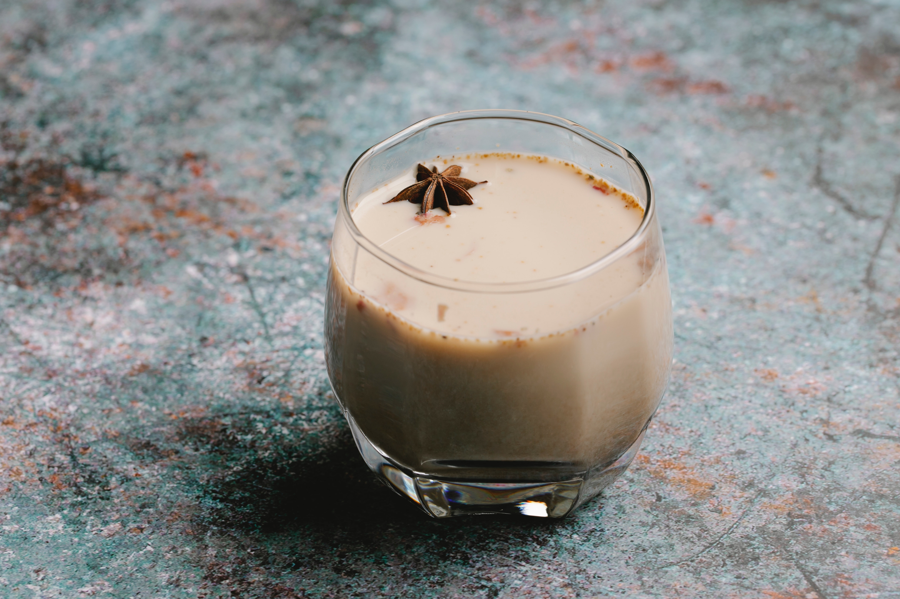

Ponche De Creme
A Delicious Christmas Drink

Ingredients
- 6 Eggs
- Peel of 1 Lime
- 3 Cans of Evaporated milk (low fat) (15 oz.)
- 1 1/2 Cans of Condensed Milk(14 oz.)
- 1 Teaspoon of Angostura Aromatic Bitters
- 1/2 Teaspoon of Grated Nutmeg
- 250ml White Rum
Instructions
- Beat eggs and lime peel together, until light and fluffy.
- Add evaporated milk and stir.
- Sweeten to taste with condensed milk.
- Add Angostura Aromatic Bitters, grated nutmeg and rum
according to one's taste.
- Remove lime peel and serve with crushed ice.
This is my favorite recipe because, not only is it my favorite Christmas drink but this
recipe was used the first time my mom and I were cooking in the kitchen together.
Try free online recipes @ Classic Bakes